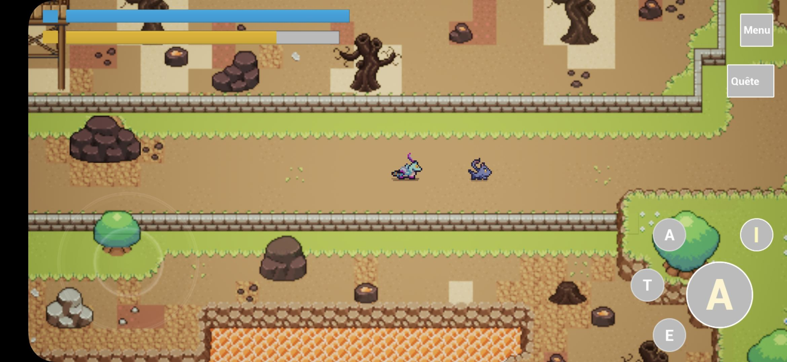
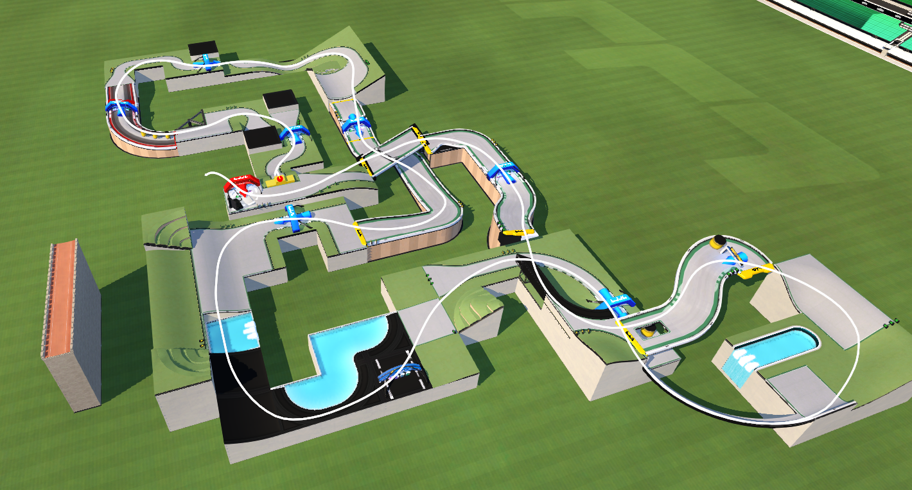

Dans le cadre de la sensibilisation au parcours de soins des grands brûlés, l'association Burns & Smiles a lancé le projet de créer un jeu éducatif visant à accompagner les victimes de brûlures (et notamment les jeunes enfants) avec l'aide d'Alten. J'ai eu la chance de participer à ce projet dès ses prémices, et ait donc contribué à la conception du jeu, de son scénario, et surtout de ses cartes.

L’objectif principal étant de concevoir un circuit accessible aux joueurs occasionnels, mais suffisamment exigeant pour rester intéressant en compétition, un gameplay "Tech" majoritairement bitumé reposant sur une vitesse modérée et de nombreux drifts semblait parfait pour ce rôle. Cela permet également de coller parfaitement au thème "grand prix urbain" imposé par les élus de la ville, tout en renforçant l'aspect "Easy to Learn, Hard to Master" recherché pour une telle compétition ouverte à tous.

Pour le flow du circuit, d'expérience, l'alternance de virages droite et gauche plus ou moins serrés et complexes est un pattern plutôt naturel qui fonctionne très bien, en laissant entre chaque drift et chaque difficulté un petit temps de repositionnement afin de corriger les erreurs et/ou se préparer à l'obstacle suivant.